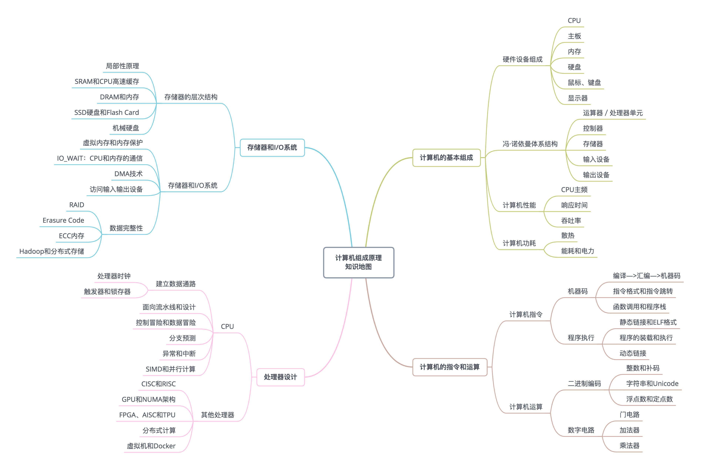

- 00 开篇词 为什么你需要学习计算机组成原理？.md
- 01 冯·诺依曼体系结构：计算机组成的金字塔.md
- 02 给你一张知识地图，计算机组成原理应该这么学.md
- 03 通过你的CPU主频，我们来谈谈“性能”究竟是什么？.md
- 04 穿越功耗墙，我们该从哪些方面提升“性能”？.md
- 05 计算机指令：让我们试试用纸带编程.md
- 06 指令跳转：原来if...else就是goto.md
- 07 函数调用：为什么会发生stack overflow？.md
- 08 ELF和静态链接：为什么程序无法同时在Linux和Windows下运行？.md
- 09 程序装载：“640K内存”真的不够用么？.md
- 10 动态链接：程序内部的“共享单车”.md
- 11 二进制编码：“手持两把锟斤拷，口中疾呼烫烫烫”？.md
- 12 理解电路：从电报机到门电路，我们如何做到“千里传信”？.md
- 13 加法器：如何像搭乐高一样搭电路（上）？.md
- 14 乘法器：如何像搭乐高一样搭电路（下）？.md
- 15 浮点数和定点数（上）：怎么用有限的Bit表示尽可能多的信息？.md
- 16 浮点数和定点数（下）：深入理解浮点数到底有什么用？.md
- 17 建立数据通路（上）：指令加运算=CPU.md
- 18 建立数据通路（中）：指令加运算=CPU.md
- 19 建立数据通路（下）：指令加运算=CPU.md
- 20 面向流水线的指令设计（上）：一心多用的现代CPU.md
- 21 面向流水线的指令设计（下）：奔腾4是怎么失败的？.md
- 22 冒险和预测（一）：hazard是“危”也是“机”.md
- 23 冒险和预测（二）：流水线里的接力赛.md
- 24 冒险和预测（三）：CPU里的“线程池”.md
- 25 冒险和预测（四）：今天下雨了，明天还会下雨么？.md
- 26 Superscalar和VLIW：如何让CPU的吞吐率超过1？.md
- 27 SIMD：如何加速矩阵乘法？.md
- 28 异常和中断：程序出错了怎么办？.md
- 29 CISC和RISC：为什么手机芯片都是ARM？.md
- 30 GPU（上）：为什么玩游戏需要使用GPU？.md
- 31 GPU（下）：为什么深度学习需要使用GPU？.md
- 32 FPGA、ASIC和TPU（上）：计算机体系结构的黄金时代.md
- 33 解读TPU：设计和拆解一块ASIC芯片.md
- 34 理解虚拟机：你在云上拿到的计算机是什么样的？.md
- 35 存储器层次结构全景：数据存储的大金字塔长什么样？.md
- 36 局部性原理：数据库性能跟不上，加个缓存就好了？.md
- 37 理解CPU Cache（上）：“4毫秒”究竟值多少钱？.md
- 38 高速缓存（下）：你确定你的数据更新了么？.md
- 39 MESI协议：如何让多核CPU的高速缓存保持一致？.md
- 40 理解内存（上）：虚拟内存和内存保护是什么？.md
- 41 理解内存（下）：解析TLB和内存保护.md
- 42 总线：计算机内部的高速公路.md
- 43 输入输出设备：我们并不是只能用灯泡显示“0”和“1”.md
- 44 理解IO_WAIT：IO性能到底是怎么回事儿？.md
- 45 机械硬盘：Google早期用过的“黑科技”.md
- 46 SSD硬盘（上）：如何完成性能优化的KPI？.md
- 47 SSD硬盘（下）：如何完成性能优化的KPI？.md
- 48 DMA：为什么Kafka这么快？.md
- 49 数据完整性（上）：硬件坏了怎么办？.md
- 50 数据完整性（下）：如何还原犯罪现场？.md
- 51 分布式计算：如果所有人的大脑都联网会怎样？.md
- 52 设计大型DMP系统（上）：MongoDB并不是什么灵丹妙药.md
- 53 设计大型DMP系统（下）：SSD拯救了所有的DBA.md
- 54 理解Disruptor（上）：带你体会CPU高速缓存的风驰电掣.md
- 55 理解Disruptor（下）：不需要换挡和踩刹车的CPU，有多快？.md
- 结束语 知也无涯，愿你也享受发现的乐趣.md
02 给你一张知识地图，计算机组成原理应该这么学
了解了现代计算机的基本硬件组成和背后最基本的冯·诺依曼体系结构，我们就可以正式进入计算机组成原理的学习了。在学习一个一个零散的知识点之前，我整理了一份学习地图，好让你对将要学习的内容有一个总纲层面的了解。

建议保存后查看大图
从这张图可以看出来，整个计算机组成原理，就是围绕着计算机是如何组织运作展开的。
计算机组成原理知识地图
计算机组成原理的英文叫 Computer Organization。这里的 Organization 是“组织机构”的意思。计算机由很多个不同的部件放在一起，变成了一个“组织机构”。这个组织机构最终能够进行各种计算、控制、读取输入，进行输出，达成各种强大的功能。
在这张图里面，我们把整个计算机组成原理的知识点拆分成了四大部分，分别是计算机的基本组成、计算机的指令和计算、处理器设计，以及存储器和 I/O 设备。
首先，我们来看计算机的基本组成。
这一部分，你需要学习计算机是由哪些硬件组成的。这些硬件，又是怎么对应到经典的冯·诺依曼体系结构中的，也就是运算器、控制器、存储器、输入设备和输出设备这五大基本组件。除此之外，你还需要了解计算机的两个核心指标，性能和功耗。性能和功耗也是我们在应用和设计五大基本组件中需要重点考虑的因素。
了解了组成部分，接下来你需要掌握计算机的指令和计算。
在计算机指令部分，你需要搞明白，我们每天撰写的一行行 C、Java、PHP 程序，是怎么在计算机里面跑起来的。这里面，你既需要了解我们的程序是怎么通过编译器和汇编器，变成一条条机器指令这样的编译过程（如果把编译过程展开的话，可以变成一门完整的编译原理课程），还需要知道我们的操作系统是怎么链接、装载、执行这些程序的（这部分知识如果再深入学习，又可以变成一门操作系统课程）。而这一条条指令执行的控制过程，就是由计算机五大组件之一的控制器来控制的。
在计算机的计算部分，你要从二进制和编码开始，理解我们的数据在计算机里的表示，以及我们是怎么从数字电路层面，实现加法、乘法这些基本的运算功能的。实现这些运算功能的 ALU（Arithmetic Logic Unit/ALU），也就是算术逻辑单元，其实就是我们计算机五大组件之一的运算器。
这里面有一个在今天看起来特别重要的知识点，就是浮点数（Floating Point）。浮点数是我们在日常运用中非常容易用错的一种数据表示形式。掌握浮点数能让你对数据的编码、存储和计算能够有一个从表到里的深入理解。尤其在 AI 火热的今天，浮点数是机器学习中重度使用的数据表示形式，掌握它更是非常有必要。
明白计算机指令和计算是如何运转的，我们就可以深入到CPU 的设计中去一探究竟了。
CPU 时钟可以用来构造寄存器和内存的锁存器和触发器，因此，CPU 时钟应该是我们学习 CPU 的前导知识。搞明白我们为什么需要 CPU 时钟（CPU Clock），以及寄存器和内存是用什么样的硬件组成的之后，我们可以再来看看，整个计算机的数据通路是如何构造出来的。
数据通路，其实就是连接了整个运算器和控制器，并最终组成了 CPU。而出于对于性能和功耗的考虑，你要进一步理解和掌握面向流水线设计的 CPU、数据和控制冒险，以及分支预测的相关技术。
既然 CPU 作为控制器要和输入输出设备通信，那么我们就要知道异常和中断发生的机制。在 CPU 设计部分的最后，我会讲一讲指令的并行执行，看看如何直接在 CPU 层面，通过 SIMD 来支持并行计算。
最后，我们需要看一看，计算机五大组成部分之一，存储器的原理。通过存储器的层次结构作为基础的框架引导，你需要掌握从上到下的 CPU 高速缓存、内存、SSD 硬盘和机械硬盘的工作原理，它们之间的性能差异，以及实际应用中利用这些设备会遇到的挑战。存储器其实很多时候又扮演了输入输出设备的角色，所以你需要进一步了解，CPU 和这些存储器之间是如何进行通信的，以及我们最重视的性能问题是怎么一回事；理解什么是 IO_WAIT，如何通过 DMA 来提升程序性能。
对于存储器，我们不仅需要它们能够正常工作，还要确保里面的数据不能丢失。于是你要掌握我们是如何通过 RAID、Erasure Code、ECC 以及分布式 HDFS，这些不同的技术，来确保数据的完整性和访问性能。
学习计算机组成原理，究竟有没有好办法？
相信这个学习地图，应该让你对计算机组成这门课要学些什么，有了一些了解。不过这个地图上的知识点繁多，应该也给你带来了不小的挑战。
我上一节也说过，相较于整个计算机科学中的其他科目，计算机组成原理更像是整个计算机学科里的“纲要”。这门课里任何一个知识点深入挖下去，都可以变成计算机科学里的一门核心课程。
比如说，程序怎样从高级代码变成指令在计算机里面运行，对应着“编译原理”和“操作系统”这两门课程；计算实现背后则是“数字电路”；如果要深入 CPU 和存储器系统的优化，必然要深入了解“计算机体系结构”。
因此，为了帮你更快更好地学计算机组成，我为你总结了三个学习方法，帮你更好地掌握这些知识点，并且能够学为所用，让你在工作中能够用得上。
首先，学会提问自己来串联知识点。学完一个知识点之后，你可以从下面两个方面，问一下自己。
- 我写的程序，是怎样从输入的代码，变成运行的程序，并得到最终结果的？
- 整个过程中，计算器层面到底经历了哪些步骤，有哪些地方是可以优化的？
无论是程序的编译、链接、装载和执行，以及计算时需要用到的逻辑电路、ALU，乃至 CPU 自发为你做的流水线、指令级并行和分支预测，还有对应访问到的硬盘、内存，以及加载到高速缓存中的数据，这些都对应着我们学习中的一个个知识点。建议你自己脑子里过一遍，最好时口头表述一遍或者写下来，这样对你彻底掌握这些知识点都会非常有帮助。
其次，**写一些示例程序来验证知识点。**计算机科学是一门实践的学科。计算机组成中的大量原理和设计，都对应着“性能”这个词。因此，通过把对应的知识点，变成一个个性能对比的示例代码程序记录下来，是把这些知识点融汇贯通的好方法。因为，相比于强记硬背知识点，一个有着明确性能对比的示例程序，会在你脑海里留下更深刻的印象。当你想要回顾这些知识点的时候，一个程序也更容易提示你把它从脑海深处里面找出来。
最后，通过和计算机硬件发展的历史做对照。计算机的发展并不是一蹴而就的。从第一台电子计算机 ENIAC（Electronic Numerical Integrator And Computer，电子数值积分计算机）的发明到现在，已经有 70 多年了。现代计算机用的各个技术，都是跟随实际应用中遇到的挑战，一个个发明、打磨，最后保留下来的。这当中不仅仅有学术层面的碰撞，更有大量商业层面的交锋。通过了解充满戏剧性和故事性的计算机硬件发展史，让你更容易理解计算机组成中各种原理的由来。
比如说，奔腾 4 和 SPARC 的失败，以及 ARM 的成功，能让我们记住 CPU 指令集的繁与简、权衡性能和功耗的重要性，而现今高速发展的机器学习和边缘计算，又给计算机硬件设计带来了新的挑战。
给松鼠症患者的学习资料
学习总是要花点笨功夫的。最有效的办法还是“读书百遍，其义自见”。对于不够明白的知识点，多搜索，多看不同来源的资料，多和朋友、同事、老师一起交流，一定能够帮你掌握好想要学习的知识点。
在这个专栏之前，计算机组成原理，已经有很多优秀的图书和课程珠玉在前了。为了覆盖更多知识点的细节，这些书通常都有点厚，课程都会有点长。不过作为专栏的补充阅读材料，却是最合适不过了。
因此，每一讲里，我都会留下一些“补充阅读”的材料。如果你想更进一步理解更多深入的计算机组成原理的知识，乃至更多相关的其他核心课程的知识，多用一些业余时间来看一看，读一读这些“补充阅读”也一定不会让你对花在上面的时间后悔的。
下面给你推荐一些我自己看过、读过的内容。我在之后的文章里推荐的“补充阅读”，大部分都是来自这些资料。你可以根据自己的情况来选择学习。
入门书籍
我知道，订阅这个专栏的同学，有很多是非计算机科班出身，我建议你先对计算机组成原理这门课有个基本概念。建立这个概念，有两种方法，第一，你可以把我上面那张地图的核心内容记下来，对这些内容之间的关系先有个大致的了解。
第二，我推荐你阅读两本书，准确地说，这其实是两本小册子，因为它们非常轻薄、好读，而且图文并茂，非常适合初学者和想要入门组成原理的同学。一本是《计算机是怎样跑起来的》，另一本是《程序是怎样跑起来的》。我要特别说一下后面这本，它可以说是一个入门微缩版本的“计算机组成原理”。
除此之外，计算机组成中，硬件层面的基础实现，比如寄存器、ALU 这些电路是怎么回事，你可以去看一看 Coursera 上的北京大学免费公开课《Computer Organization》。这个视频课程的视频部分也就 10 多个小时。在学习专栏相应章节的前后去浏览一遍，相信对你了解程序在电路层面会变成什么样子有所帮助。
深入学习书籍
对于想要深入掌握计算机组成的同学，我推荐你去读一读《计算机组成与设计：硬件 / 软件接口》和经典的《深入理解计算机系统》这两本书。后面这本被称为 CSAPP 的经典教材，网上也有配套的视频课程。我在这里给你推荐两个不同版本的链接（Bilibili 版和Youtube 版 ）。不过这两本都在 500 页以上，坚持啃下来需要不少实践经验。
计算机组成原理还有一本的经典教材，就是来自操作系统大神塔能鲍姆（Andrew S. Tanenbaum）的《计算机组成：结构化方法》。这本书的组织结构和其他教材都不太一样，适合作为一个辅助的参考书来使用。
如果在学习这个专栏的过程中，引发了你对于计算机体系结构的兴趣，你还可以深入读一读《计算机体系结构：量化研究方法》。
课外阅读
在上面这些教材之外，对于资深程序员来说，来自 Redhat 的What Every Programmer Should Know About Memory是写出高性能程序不可不读的经典材料。而 LMAX 开源的 Disruptor，则是通过实际应用程序，来理解计算机组成原理中各个知识点的最好范例了。
《编码：隐匿在计算机软硬件背后的语言》和《程序员的自我修养：链接、装载和库》是理解计算机硬件和操作系统层面代码执行的优秀阅读材料。
总结延伸
学习不是死记硬背，学习材料也不是越多越好。到了这里，希望你不要因为我给出了太多可以学习的材料，结果成了“松鼠症”患者，光囤积材料，却没有花足够多的时间去学习这些知识。
我工作之后一直在持续学习，在这个过程中，我发现最有效的办法，不是短时间冲刺，而是有节奏地坚持，希望你能够和专栏的发布节奏同步推进，做好思考题，并且多在留言区和其他朋友一起交流，就更容易能够“积小步而至千里”，在程序员这个职业上有更长足的发展。
好了，对于学习资料的介绍就到这里了。希望在接下来的几个月里，你能和我一起走完这趟“计算机组成”之旅，从中收获到知识和成长。